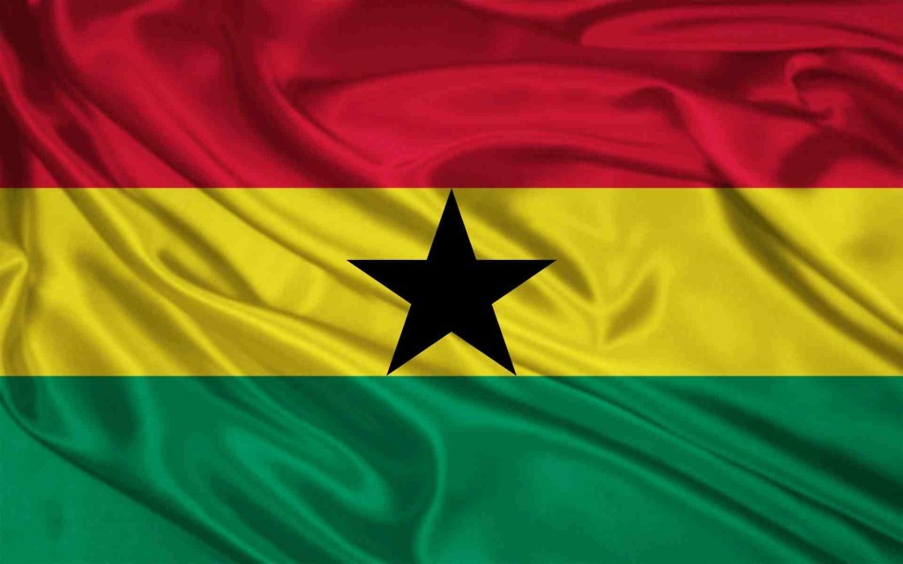

Asare Jeffrey
About Me
 Asare Jeffrey is my name, I'm currently a proud student of BYU IDAHO.
Asare Jeffrey is my name, I'm currently a proud student of BYU IDAHO.
I'm from Ghana.
GHANA

Ghana, located in West Africa with Accra as its capital, was the first sub-Saharan nation to gain independence (1957). Renowned for its political stability, the country is a vibrant democracy. It is a major producer of gold and cocoa, with a growing economy driven by oil. The nation is known for its diverse ethnic groups, welcoming culture, and rich history